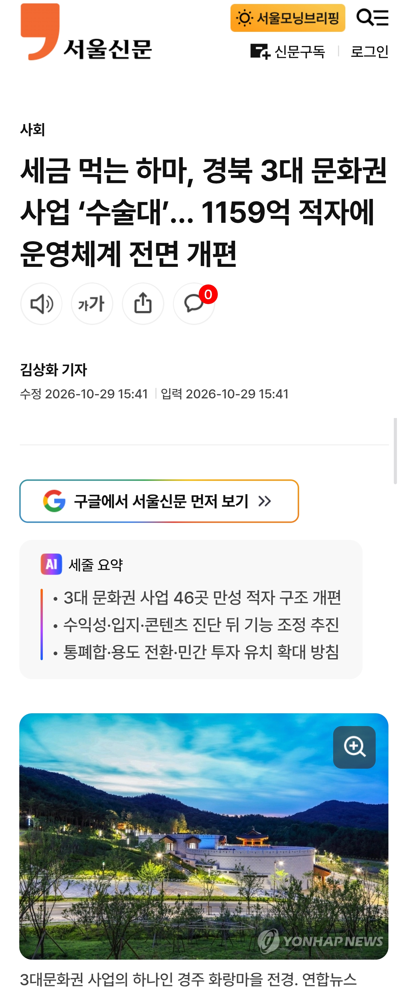

3대 문화권 사업은 경북의 유교·신라·가야 문화를 관광자원으로 육성하기 위해 추진됐다.
2008년 정부의 광역경제권 30대 선도프로젝트에 선정된 뒤 2010년부터 2021년까지 약 2조 5971억원이 투입돼 도내 22개 시군 42개 지구에 46개 문화·생태관광 기반시설이 조성됐다.
그러나 막대한 예산을 투입하고도 운영 성과가 기대에 미치지 못하면서 지방자치단체의 재정 부담을 키우는 애물단지라는 지적이 이어졌다.
지난해에만 46개 사업장 가운데 37곳이 적자를 기록했고, 적자 규모는 253억원에 달했다. 2020년부터 지난해까지 누적 적자는 1159억 5300만원으로 집계됐다.
https://m.seoul.co.kr/news/society/2026/10/29/20261029500209
사업비도 몇조단위로 많이 들었는데
유지비로도 많은 돈이 깨지는 상황이라
적자 개선을 위해 운영체계를 개선한다고 함
근데 개선해도 저런 거대한 시설을 운영하는데 드는 돈을 절약하기엔 한계가 있을듯
그럼 충청도가 아니라 천안,대전,청주인거잖아...그리고 거기가 왜 죽어감? 거기도 나름대로 많이 행사하고있는데 우리나라에서 그 지역보다 더 살아나고있는 지역은 없을껄?